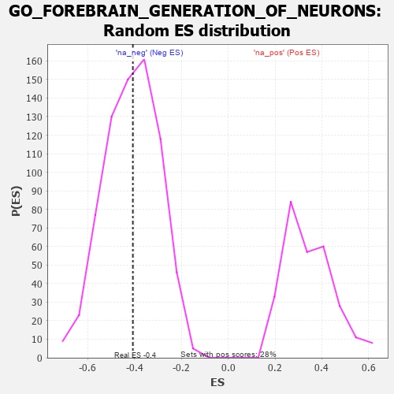

| | | Dataset | 7d |
| Phenotype | NoPhenotypeAvailable |
| Upregulated in class | na_neg |
| GeneSet | GO_FOREBRAIN_GENERATION_OF_NEURONS |
| Enrichment Score (ES) | -0.40719905 |
| Normalized Enrichment Score (NES) | -0.988508 |
| Nominal p-value | 0.49513212 |
| FDR q-value | 0.88769203 |
| FWER p-Value | 1.0 |
Table: GSEA Results Summary
 Fig 1: Enrichment plot: GO_FOREBRAIN_GENERATION_OF_NEURONS
Fig 1: Enrichment plot: GO_FOREBRAIN_GENERATION_OF_NEURONS
Profile of the Running ES Score & Positions of GeneSet Members on the Rank Ordered List
| PROBE | GENE SYMBOL | GENE_TITLE | RANK IN GENE LIST | RANK METRIC SCORE | RUNNING ES | CORE ENRICHMENT | | 1 | ARX | | | 322 | 0.782 | 0.0489 | No |
| 2 | HES5 | | | 661 | 0.571 | 0.0717 | No |
| 3 | OTP | | | 2209 | 0.275 | -0.0913 | No |
| 4 | SLIT2 | | | 2724 | 0.195 | -0.1336 | No |
| 5 | NR2E1 | | | 2844 | 0.177 | -0.1284 | No |
| 6 | FGFR2 | | | 2895 | 0.167 | -0.1155 | No |
| 7 | LEF1 | | | 3037 | 0.144 | -0.1168 | No |
| 8 | PAX6 | | | 3170 | 0.127 | -0.1189 | No |
| 9 | ROBO2 | | | 4066 | -0.018 | -0.2293 | No |
| 10 | LHX5 | | | 4332 | -0.066 | -0.2551 | No |
| 11 | FGFR1 | | | 5543 | -0.332 | -0.3693 | Yes |
| 12 | ASPM | | | 5637 | -0.358 | -0.3401 | Yes |
| 13 | UBB | | | 6090 | -0.503 | -0.3395 | Yes |
| 14 | FEZF2 | | | 6150 | -0.519 | -0.2876 | Yes |
| 15 | ROBO1 | | | 6577 | -0.699 | -0.2613 | Yes |
| 16 | DCLK2 | | | 7529 | -1.439 | -0.2164 | Yes |
| 17 | DLX5 | | | 7845 | -2.378 | 0.0158 | Yes |
Table: GSEA details [plain text format]

Fig 2: GO_FOREBRAIN_GENERATION_OF_NEURONS: Random ES distribution
Gene set null distribution of ES for GO_FOREBRAIN_GENERATION_OF_NEURONS